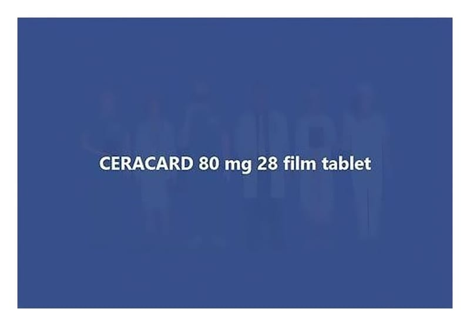

Ceracard 80 mg Film Tablet, 28 Adet

Ne için kullanılır
KT · Bölüm 1CERACARD, 28 ve 98 adet film tablet içeren blister ambalajda takdim edilmektedir. Tabletler yuvarlak, çentiksiz, pembe renklidir. Her bir film tablet, 80 mg valsartan içerir. CERACARD, yüksek kan basıncının kontrol edilmesine yardımcı olan anjiyotensin II antagonistleri olarak bilinen ilaç sınıfına aittir.
CERACARD 6 4 18 ya arasındaki çocuklar ve ergenlerin yüksek kan basıncı ile yeti kinlerde yüksek kan basıncının dü ürülmesinde kullanılır. CERACARD, kalp yetmezliği tedavisinde de kullanılmaktadır. CERACARD ayrıca, sağ kalımı iyile tirmek ve ilave kalp sorunlarını azaltmak üzere kalp krizi (miyokard infarktüsü) geçirmi hastaların tedavisinde de kullanılabilir.
CERACARD’ın ne ekilde etki ettiğine veya bu ilacın size neden reçete edildiğine ili kin sorularınız varsa, doktorunuza danı ın.